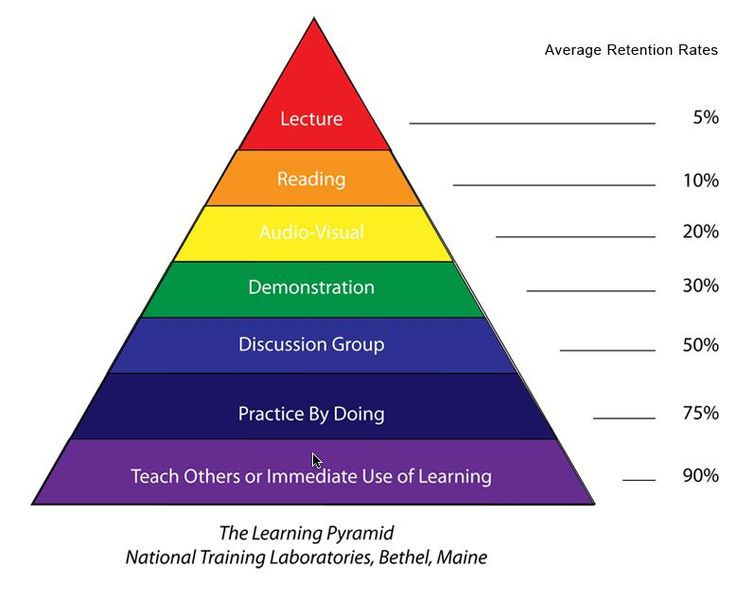

My philosophy of education is that all kids are extraordinary in their own way. They must also have an welcoming educational environment where they can develop truly, intellectually, emotionally, and socially thrive because of Skinner's theory of Behaviorism (which means any and all behavior are affected by their environment). It is my desire to make this kind of environment where my students can meet their full potential. I also agree with Dewey's "hands-on" approach because there a lot of children that can be helped in the classroom through a more of hands on learning.
